Projects
What I cannot create, I do not understand - Richard Feynman
Raft KV Store
Resilient distributed key-value store built on the Raft consensus algorithm, featuring leader elections, log replication, fault tolerance, snapshotting, log compaction, TCP networking, and linearizability testing with Jepsen-style fault injection
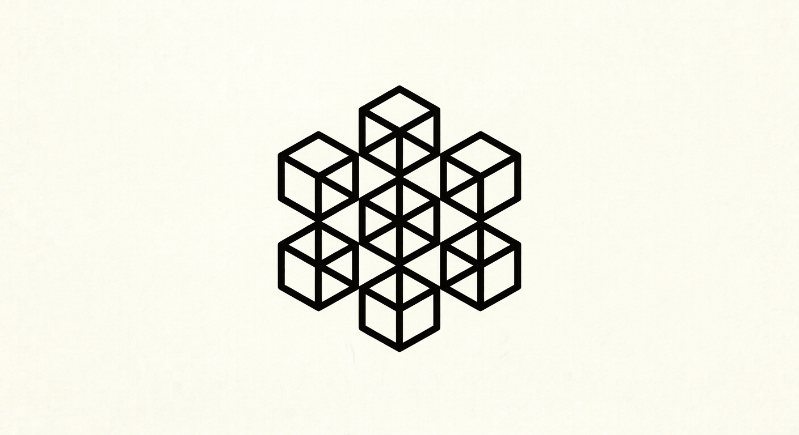
Bracha Byzantine Reliable Broadcast
Implementation of Bracha's asynchronous Byzantine Reliable Broadcast protocol in Rust, featuring fault-tolerant message propagation, adversarial network simulation, Byzantine fault injection, TCP networking, and a Coq formal specification with machine-checked integrity and quorum-intersection proofs
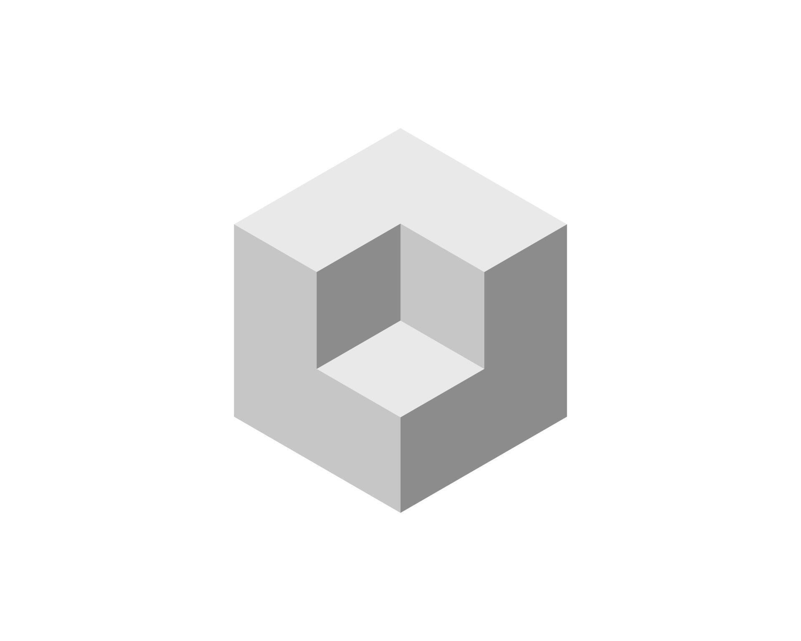
OS Lab
Collection of low-level systems programming projects for Linux and x86, featuring a bootable 32-bit kernel, container runtime using Linux namespaces, custom filesystem, preemptive threading runtime, real-time scheduling algorithms, memory allocator, and UNIX shell, with hand-written assembly context switching and memory routines
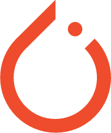
MiniPyTorch
Minimal PyTorch-like deep learning library featuring Linear and convolutional layers, pooling, activation functions, explicit forward/backward propagation, SGD and Adam optimizers, and model serialization, with a NumPy frontend backed by C++17 and hand-written x86-64 assembly kernels
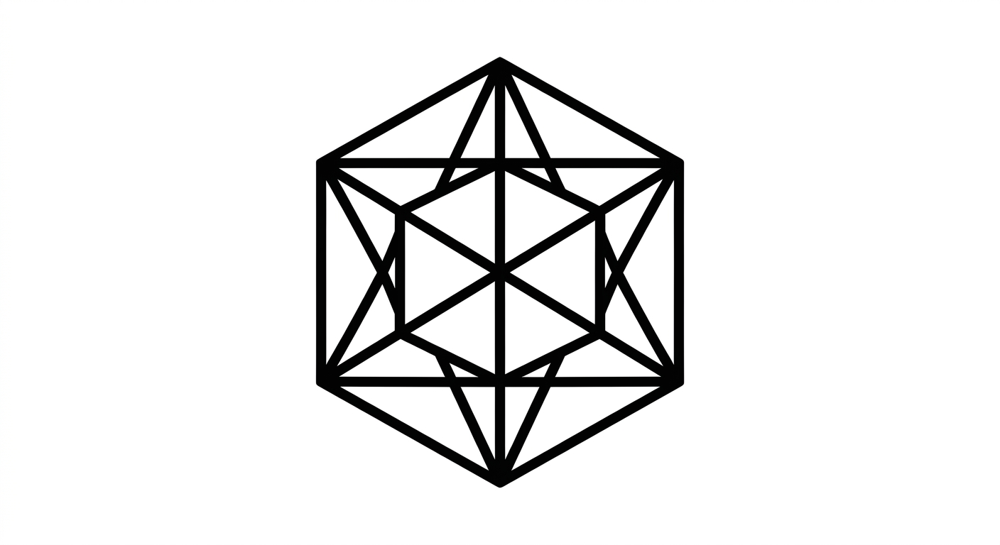
SAT Solver
Boolean satisfiability solver implemented from scratch, featuring exhaustive enumeration, DPLL with unit propagation and pure-literal elimination, and CDCL with watched literals, first-UIP conflict analysis, non-chronological backtracking, and VSIDS branching, validated through property-based differential testing
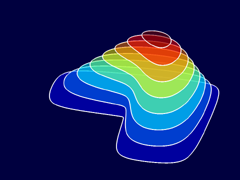
Nabla
Compiled programming language for numerical computing featuring native matrix and array types, gradient and Jacobian computation via central finite differences, linear algebra operations, built-in statistical functions, and an LLVM-based JIT compiler
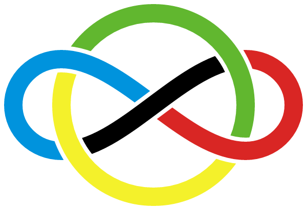
Neural Prover
LoRA fine-tuned language model for Lean 4 theorem proving, featuring next-tactic prediction, bounded best-first proof search, goal-aware tactic ranking, Mathlib proof-data extraction and preprocessing, and kernel-verified proof generation with automated axiom checks
Load Balancer
Load balancer with round-robin scheduling and active health checks
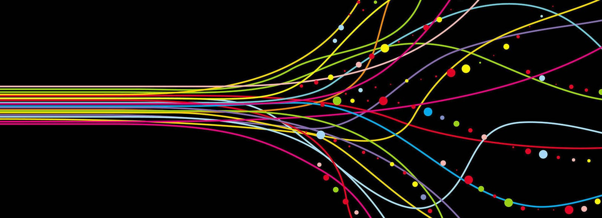
Parallel Algorithms
Parallel Algorithms implementations showcasing concurrency and multithreading
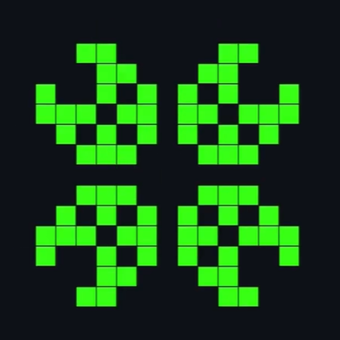
Game of Life
Modular implementation of Conway's Game of Life in OCaml, featuring dense array-based and sparse set-based simulation engines, toroidal boundary handling, Run-Length Encoded pattern parsing, terminal animation, and graphical visualization
Proofs
Formal verification project implementing machine-checked proofs of classical mathematical theorems in Lean 4, including Euclid's theorem, the Pigeonhole Principle, and inductive proof techniques
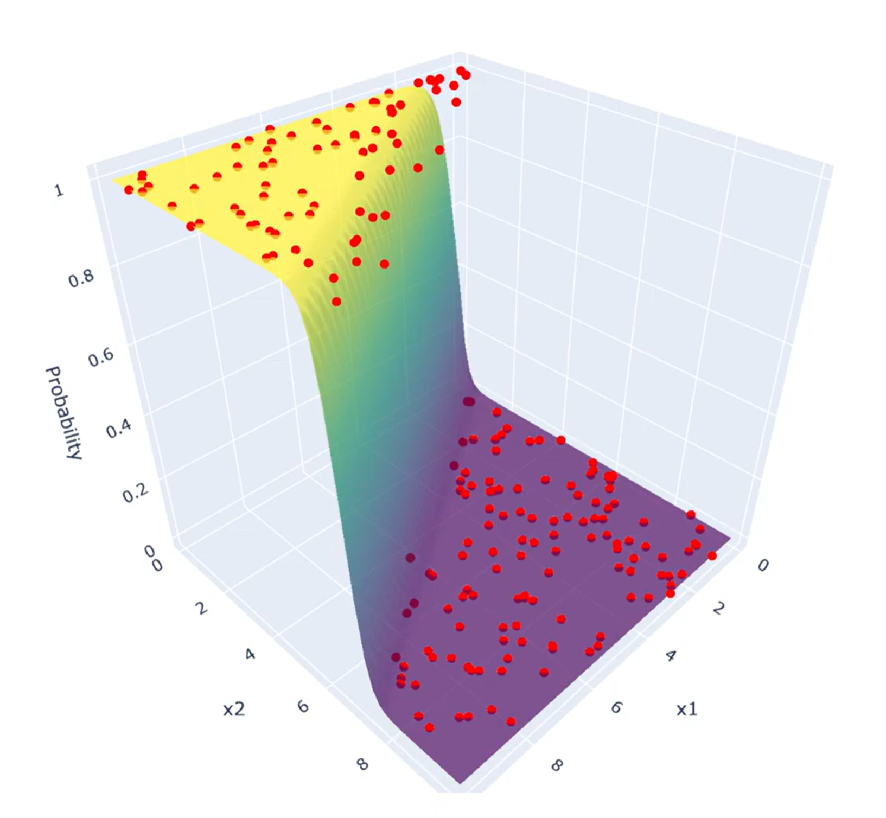
ML from Scratch
From scratch implementations of classic ML algorithms
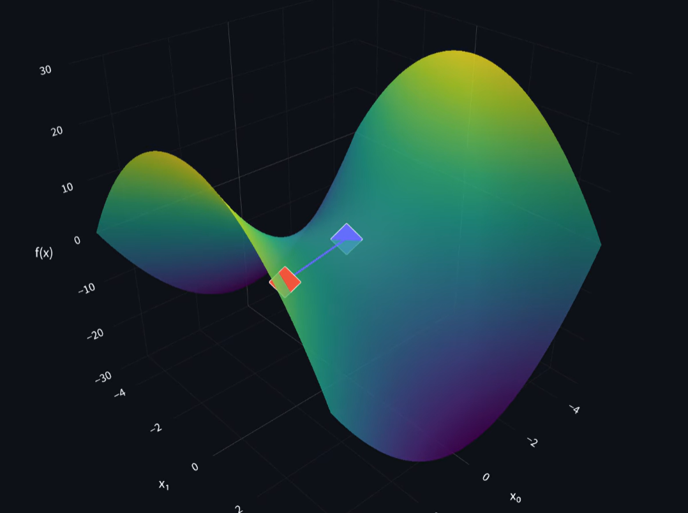
Optimization Dynamics Lab
From scratch numerical optimization framework implementing GD, momentum, Newton, SGD, backtracking line search, golden section, penalty, and Lagrange multipliers with finite-difference Gradient and Hessian estimation
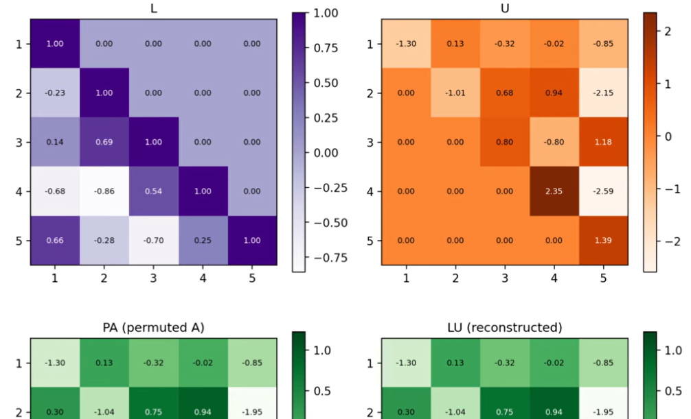
Matrix Intelligence Lab
Linear algebra framework implementing PCA, LU decomposition with partial pivoting, QR decomposition via Modified Gram-Schmidt, SVD image compression, and matrix factorization recommender system
Bayesian Inference Lab
From-scratch Bayesian inference library implementing probability distributions, Metropolis-Hastings, Gibbs sampling, Hamiltonian Monte Carlo, NUTS, conjugate Bayesian inference, posterior predictive analysis, convergence diagnostics, and reverse-mode automatic differentiation
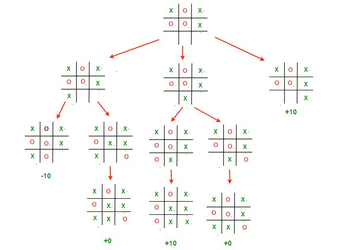
Tic Tac Toe AI
Unbeatable Tic Tac Toe AI using the Minimax algorithm
Flappy Bird AI
Flappy Bird-playing AI trained using NeuroEvolution of Augmenting Topologies (NEAT), featuring evolutionary neural network training, deterministic headless simulation, real-time visualization, and saved-genome replay
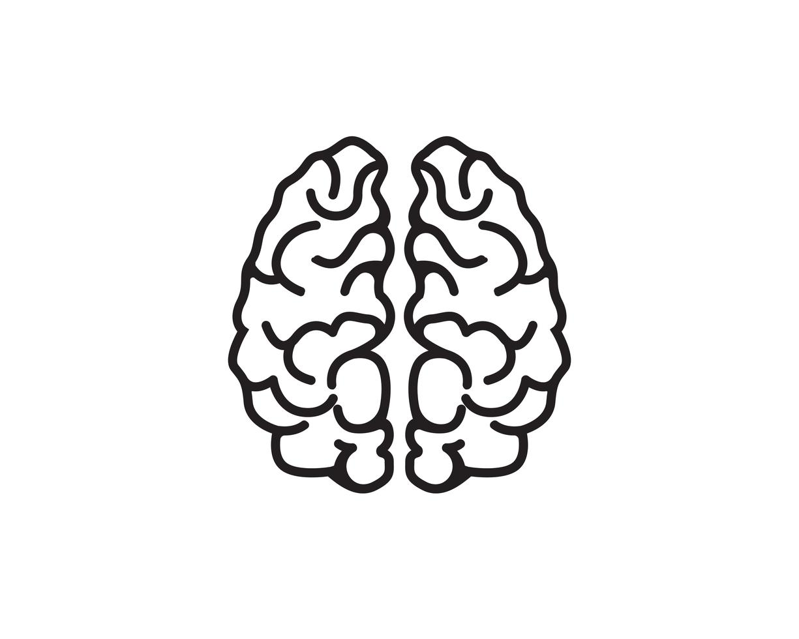
EEG Cognitive-State Decoder
EEG-based mental workload classification using the STEW dataset, featuring signal preprocessing, spectral feature extraction, classical ML baselines, CNN-based neural decoding, subject-independent evaluation, statistical significance testing, and ablation studies